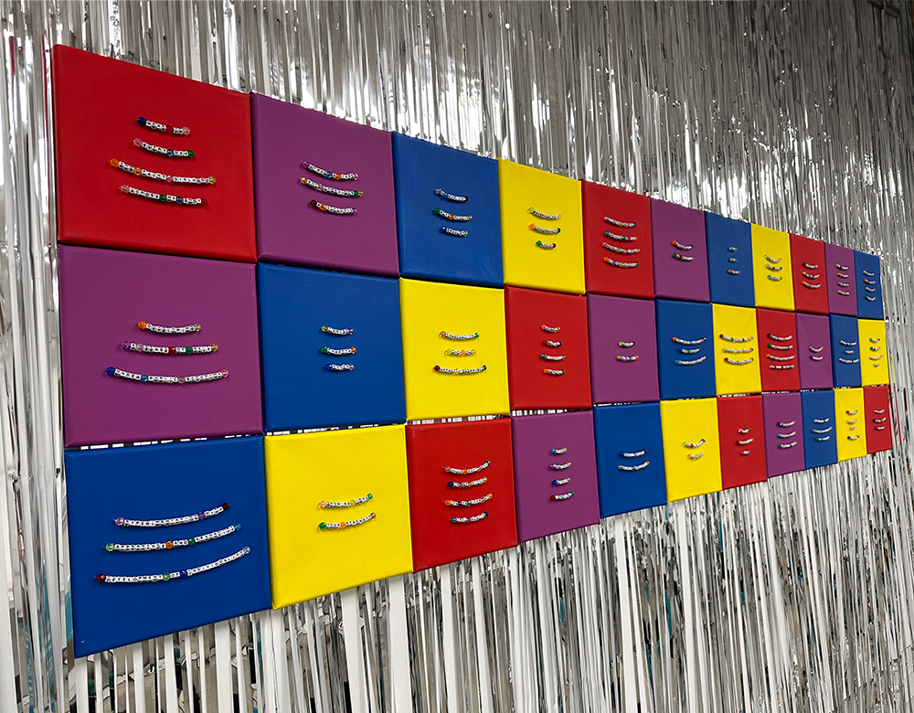
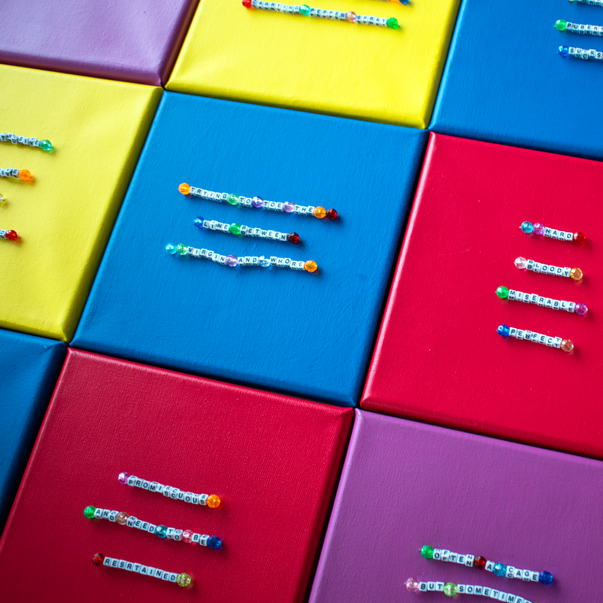

girlhood redefined
Girlhood Redefined is a year-long research, art, and design project by Avrie Allen in partnership with the Kinsey Institute. This project is a work in progress, and features a website archive, www.girlhood.is, of anonymous contributors sharing their definitions of girlhood. Girlhood Redefined will be exhibited March 22-April 20, 2024 in the Tangent Gallery at Indiana University and seeks to showcase the multiplicity of girlhood and promote feminist modes of knowledge creation.
Visit the website and add to the archive!


